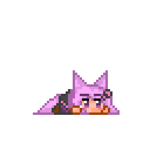
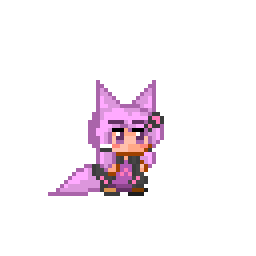
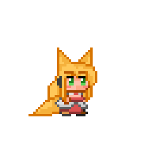

更新履歴
| 2018/11/13 | タイトルに戻った際のRTAモードのフラグを維持 |
| 2018/11/13 | ジャンプの際のセリフを固定2種からランダム7種に変更 |
| 2018/11/03 | ツイート機能実装 |
| 2018/11/03 | 公開 |

読まなくても全く問題のない
説明書

- ゆかりさんを操作して、ゴールに向かって競争するゲームです。
- ゆかりさんだけフルボイス！ ぜひ音を出してプレイして頂けると幸いです。
- キーボードの十字キー左右で移動、Cでジャンプ、ジャンプ中にもう一度Cで二段ジャンプができます。
下キーでしゃがめますが特に使い所はありません。 - シナリオパート中にCキーを長押しすると、シナリオパートをスキップして競争パートに移ることができます。
- タイトル画面左上のRTAモードをオンにすることで、自動でシナリオパートをスキップすることができます。
- タイムに応じてランクがつき、そのランクに応じてリザルトでのゆかりさんのコメントがちょっと変わります。
- ブラウザによって挙動が異なる場合があります。
Chromeだとタイトル画面で音声が再生されるようになるまで少し時間がかかります。

| ランク | タイム |
|---|---|
| S | ~43秒 |
| A | ~50秒 |
| B | ~60秒 |
| C | ~80秒 |
| D | ~180秒 |
| E | 180秒~ |

お借りしたもの
- 【立ち絵】
- 結月ゆかり【キャラ素材】(blueberry様)
- 弦巻マキ【キャラ素材】(blueberry様)
- 【吹き出し】
- 横長スリム長方形 (フキダシデザイン様)
- 【背景】
- 2D Jungle Side-Scrolling Platformer Pack(Super Brutal Assets様)
- 【BGM】
- 【SE】
- 効果音ラボ様